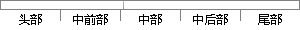

每一条信息的修改都会调用接口。
片段位置图

相似结果|
相似片段 1：纪委模块的审核添加、修改、删除、提交测试目的 测试功能能否正常使用，能否正常添加、修改、删除、提交一个待审核的信息前提条件 成铁局党政管理系统的正常登录调用局纪委模块的添加接口 成功添加一条待审核信息
|
※ 片段修改建议 ※
近似词参考：- 修改：点窜
- 都会：城市 都邑 都市
- 调用：挪用
系统自动生成语句：每一条信息的点窜城市挪用接口。
注：本片段修改建议为系统自动生成，仅供参考。